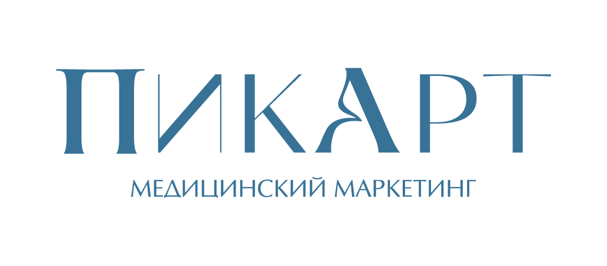
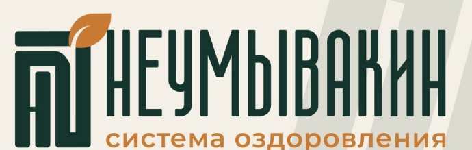
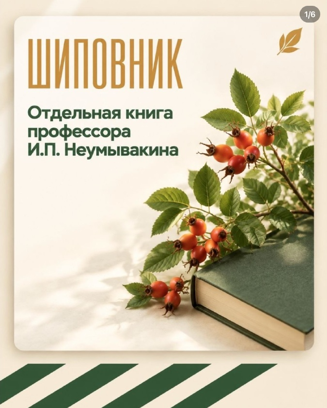
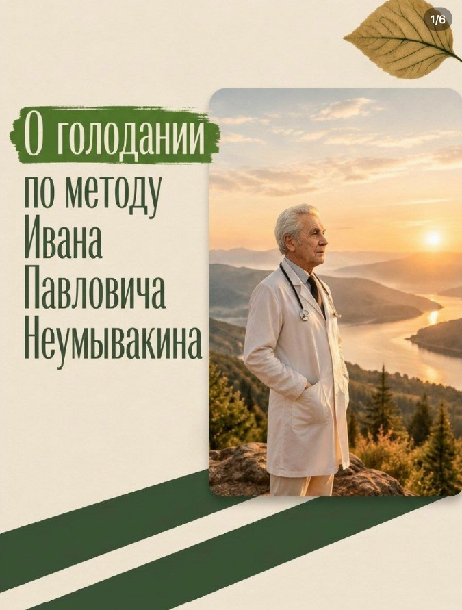
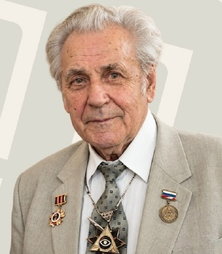
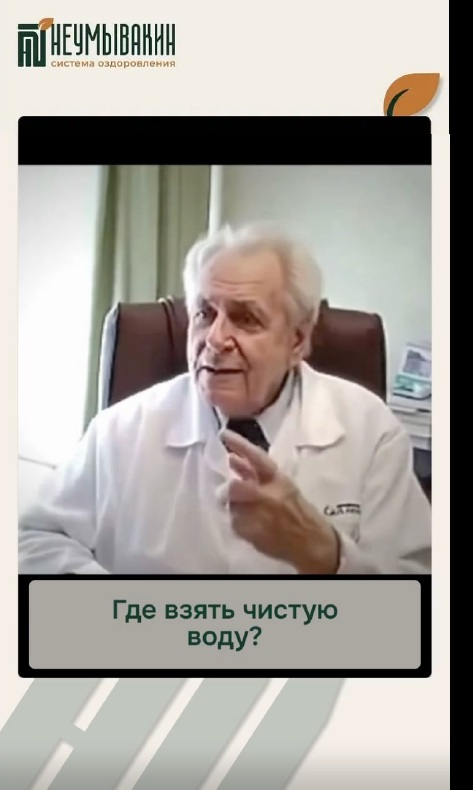

Водное
Отказ от пищи с употреблением воды. В этой категории сравниваем программы голодания и варианты сопровождения.

Коммерческое предложение
Оформление и ведение социальных сетей
Telegram · ВКонтакте · Instagram · MAX



Вы запускаете новый проект и разрабатываете сайт. Наша задача — оформить и регулярно вести четыре соцсети, чтобы посетитель из рекламы мог познакомиться с проектом, разобраться в программах и найти нужные контакты.
Проект на старте, сайт в разработке. Соцсети станут площадками для знакомства с проектом: здесь будут сведения о команде, программах и условиях участия.
Подготовить оформление и навигацию, выстроить единый контент-план, адаптировать материалы под четыре площадки и организовать регулярное ведение.
Сохраняем узнаваемую подачу вашего ВК: хвойный зелёный, охристые акценты, светлые поверхности, крупные заголовки и диагональную графику. Развиваем её в единую систему для четырёх площадок.
Ведение создаёт содержательную площадку для посетителей. Рекламные кампании приводят на неё аудиторию. В этом предложении — стратегия, оформление, контент и регулярная работа с соцсетями.
Сформулируем позиционирование, оформим профили, подготовим закреплённые материалы, описания программ и навигацию. Посетитель сразу увидит, что представляет собой проект, кто за ним стоит и где найти условия участия.
Результат: четыре оформленные площадки с единым стилем, основными сведениями о проекте и понятным переходом к контакту или сайту.
Составим контент-план, подготовим тексты, сценарии коротких видео и визуальные материалы. Адаптируем публикации для каждой площадки, согласуем их с командой и будем выпускать по плану.
В контенте объясним особенности подхода, представим автора методики и покажем, как организованы программы проекта.
В книге «Здоровье в ваших руках» И. П. и Л. С. Неумывакиных (1994, с. 225–226) приведена схема многодневного голодания с водой, подготовкой и выходом. В «Эндоэкологии здоровья» (2010, с. 276–277) автор перечисляет водный, соковый и сухой варианты. Поэтому сводить всё его описание к единственному виду голодания было бы неточно.
Для сравнения выбираем категорию многодневного водного / лечебного голодания с подготовкой и выходом. В соцсетях представим планируемые курсы на 3 и 10 дней на основе программ команды проекта.
Для каждого курса подготовим описание этапов, формата участия, сопровождения и условий доступа.
Отказ от пищи с употреблением воды. В этой категории сравниваем программы голодания и варианты сопровождения.
Исключение пищи и воды. Отдельная категория авторских программ.
Программы с определёнными напитками и компонентами рациона. Не равны полному водному голоданию.
Пищевые окна чередуются с паузами; питание регулярно возвращается.
Рацион, имитирующий голодание: еда сохраняется, меняются её состав и количество.
Прямые конкуренты предлагают многодневные программы лечебного голодания. Косвенных — по альтернативному способу решить близкий запрос: интервальное, сухое, условное голодание или FMD.
У Смолякова есть программы на 3 и 10 дней, у SpaGolod — онлайн-поток. Остальные три прямых конкурента работают очно: их роль в выборе аудитории и брендовой выдаче отличается.
Два ближайших онлайн-предложения и три очных альтернативы.
Другие подходы, с которыми аудитория будет сравнивать ваши программы.
Покажем содержание, расписание, формат доступа и сопровождения. Поможем сформулировать, какие вопросы человек должен решить до участия.
В предложении: описание курса для публикаций и закреплённых материалов.
Раскроем организацию программы, связь с командой и порядок участия на основе утверждённых материалов.
В предложении: описание курса и сравнение с трёхдневным форматом по реальным условиям.
Будем регулярно рассказывать о проекте, знакомить с командой, объяснять устройство программ и публиковать анонсы. Новому посетителю из рекламы будет доступна содержательная, актуальная площадка.
Шесть видов контента в общей системе. Рубрики помогают представить проект, объяснить программы, показать команду и ответить на организационные вопросы.
Помогаем понять предложение и найти нужные сведения.
Предлагаемые темы: Что входит в курс; как устроен доступ; когда проходит набор; куда задать вопрос.
Разбираем вопросы аудитории и формируем реалистичные ожидания.
Предлагаемые темы: Что важно выяснить до участия; чем отличаются программы; какие вопросы обсуждать с врачом, а какие — с организаторами.
Знакомим с организаторами через живое присутствие.
Предлагаемые темы: Кто запускает проект; какие роли у команды; почему выбран онлайн-формат; как готовятся материалы.

Показываем работу проекта изнутри.
Предлагаемые темы: Как выглядит кабинет участника; где искать расписание; как направить вопрос; кто отвечает за организацию.
Получаем реальные вопросы и уточняем, что непонятно аудитории.
Предлагаемые темы: Сбор вопросов о формате; опрос о предпочтительном времени эфира; ответы на повторяющиеся организационные вопросы.
Программа · сопровождение · условия участия
Даём понятный повод обратиться, когда набор открыт.
Предлагаемые темы: Даты набора; утверждённая стоимость; сравнение условий 3 и 10 дней; порядок участия и оплаты.
Например, ответ «Как устроено сопровождение?» превращается в ролик для ВК и Instagram, подробный пост в Telegram и короткий материал в MAX.
Рекламная кампания приводит посетителя. Мы готовим информацию и навигацию внутри соцсетей, чтобы он мог разобраться в предложении.
Увидеть название, описание проекта и единый фирменный стиль.
Найти закреплённые публикации о команде, подходе и программах.
Посмотреть содержание курсов на 3 и 10 дней, формат участия и ответы на вопросы.
Перейти к описанию программы на сайте или связаться с командой по указанным контактам.
Начальные наработки, четыре площадки, сведения о проекте и планы онлайн-курсов.
План оформления и ведения четырёх площадок.
Описания профилей, визуальное оформление, закрепы, роли четырёх площадок и сценарий первого ответа.
Комплект оформления и навигации для Telegram, ВКонтакте, Instagram и MAX.
Темы, сценарии, запросы на съёмку и оформление из реальных материалов команды.
Единый контент-план, адаптация материалов и публикации на четырёх площадках.
Выполнение контент-плана, просмотры, реакции и вопросы под публикациями.
Отчёт по каждой площадке и конкретные корректировки контент-плана на следующий период.
Отчёт по ведению четырёх площадок: какие материалы вышли, как аудитория на них реагировала и что обновим в следующем месяце.
Выполнение контент-плана, количество публикаций, видео и сторис по выбранному пакету.
Просмотры, реакции, комментарии и вопросы аудитории по темам и форматам.
Актуальность описаний, закреплённых материалов, информации о курсах и контактов.
На основе отчёта скорректируем темы, форматы и навигацию для следующего месяца ведения.
Разбор стартовой ситуации, аудитории, позиционирование, конкуренты, роли четырёх площадок, рубрики, визуальная подача и план продвижения. Результат: документ со стратегией и презентация решения.
Во всех пакетах: единый контент-план, подготовка и оформление материалов, адаптация под Telegram, ВКонтакте, Instagram и MAX, согласование, публикации и ежемесячная отчётность.
Объёмы указаны за месяц. Основные материалы адаптируются для ВК и Instagram. Адаптации для Telegram и MAX используют общую контентную основу.
Операторская работа — 5 000 ₽, оплачивается отдельно.
Общую стоимость съёмки и монтажа согласуем отдельно после выбора формата и объёма работ. Оплата оператора — отдельная часть этой сметы.
Запуск рекламных кампаний, рекламный бюджет и платные размещения рассчитываются отдельно. Пакеты на этой странице включают ведение соцсетей. Разработка сайта, CRM и бота — отдельные услуги.
Информация о проекте и его организаторах, доступы к соцсетям, имеющиеся наработки и участие команды в подготовке фото и видео. По мере готовности курсов: программы и условия участия. Со стороны проекта потребуется ответственный за согласование публикаций.
Начнём со стратегии и оформления, затем организуем регулярный выпуск контента. К запуску рекламы у проекта будут площадки с понятными описаниями, навигацией и публикациями в едином стиле.
Следующий шаг: выбрать пакет ведения, согласовать разработку стратегии и дату старта. Затем получить доступы и материалы для подготовки контента.
Посмотреть пакеты